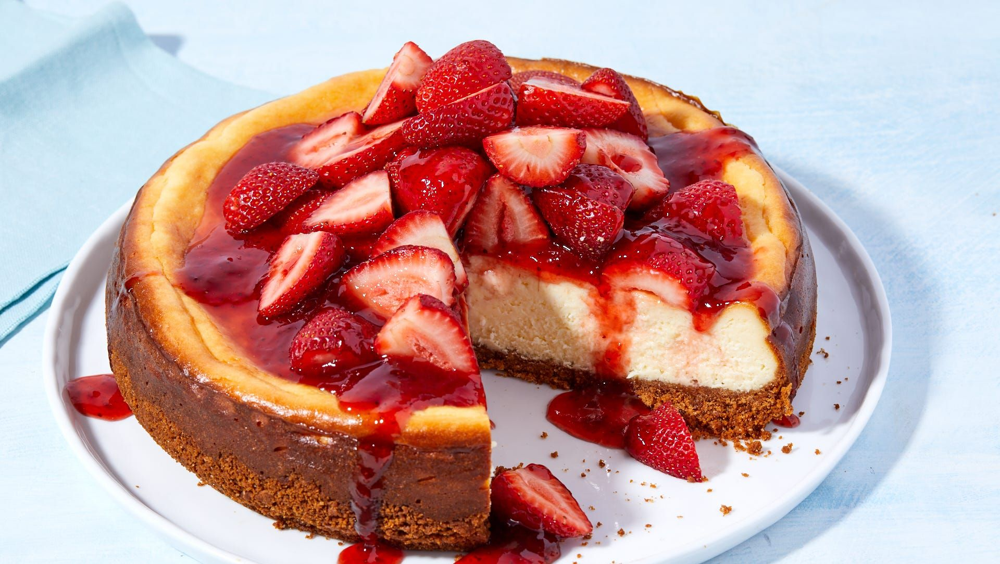

One thing I learned living in the Canarsie section of Brooklyn, NY was how
to cook a good Italian meal. Here is a recipe I created after having this
dish in a restaurant. Enjoy!

Ingredients
Instructions
To prepare crust add graham crackers to a food processor and process
until you reach fine crumbs. Add melted butter and pulse 3-4 times to
coat crumbs with butter.
Pour mixture into a 20cm (8”) tart tin. Use the back of a spoon to
firmly press the mixture out across the bottom and sides of the tart
tin. Chill for 30 min.
Begin by adding the marshmallows and melted butter into a microwave
safe bowl. Microwave for 30 seconds and mix to combine. Set aside.
Next, add the gelatine and water to a small mixing bowl and mix to
combine. Microwave for 30 seconds.
Add the cream cheese to the marshmallow mixture and use a hand mixer
or stand mixer fitted with a paddle attachment to mix until smooth.
Add the warm cream and melted gelatin mixture and mix until well
combined.
Add 1/3 of the mixture to a mixing bowl, add purple food gel and mix
until well combined. Colour 1/3 of the mixture blue. Split the
remaining mixture into two mixing bowls, colour one pink and leave the
other white.
Pour half the purple cheesecake mixture into the chill tart crust. Add
half the blue and then add the remaining purple and blue in the tart
tin. Use a spoon to drizzle some pink cheesecake on top. Use a skewer
or the end of a spoon to swirl the pink. Add some small dots of the
plain cheesecake mixture to create stars and then sprinkle some more
starts on top before chilling for 2 hours.

Comments (25)
Add your comment